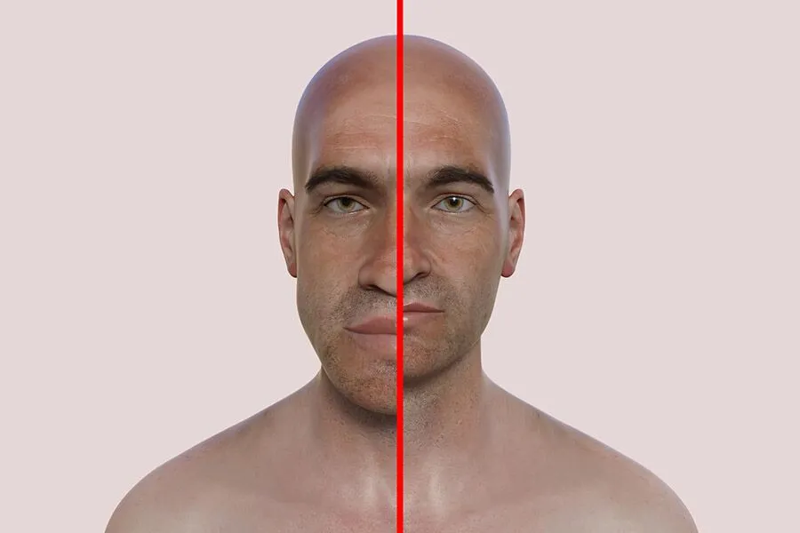

Акромегалия

- Причини -
повишена секреция на човешкия растежен хормон (hGH или соматотропин) от хипофизата при напреднала възраст поради тумор на предния дял на хипофизата.
- Признаци -
Увеличаване на размера на крайните части на тялото - нос, ръце ходила.
- Превенция и лечение -
редовни прегледи при лекар и ендокринолог.